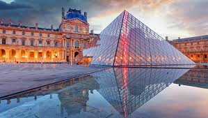
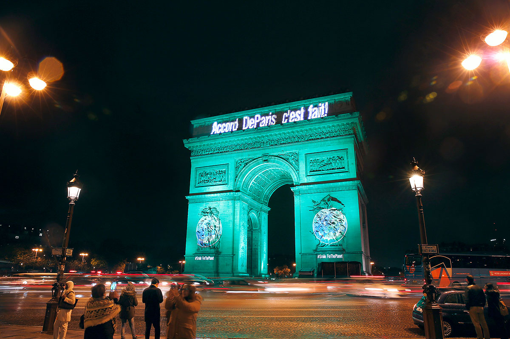
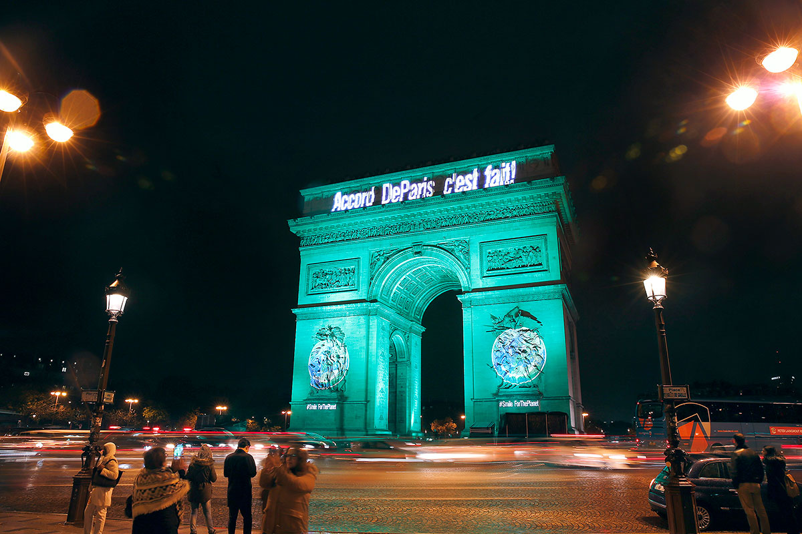
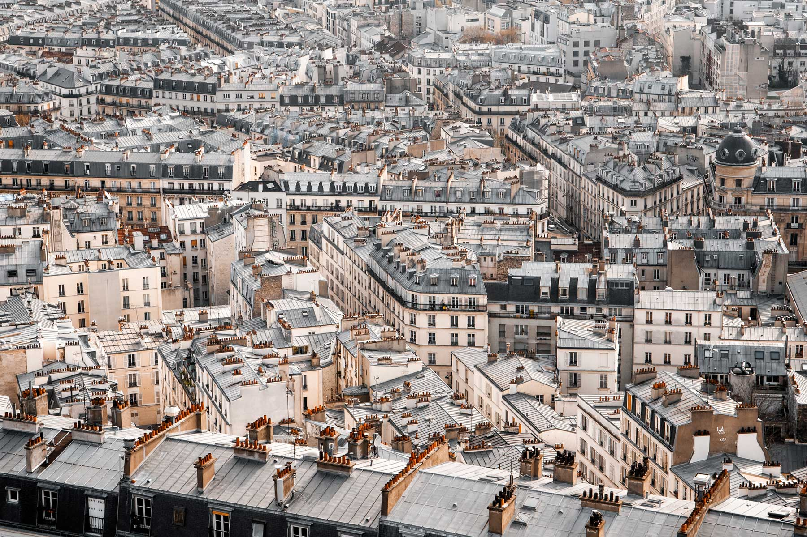
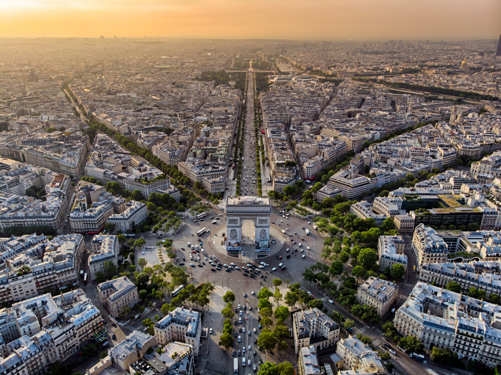
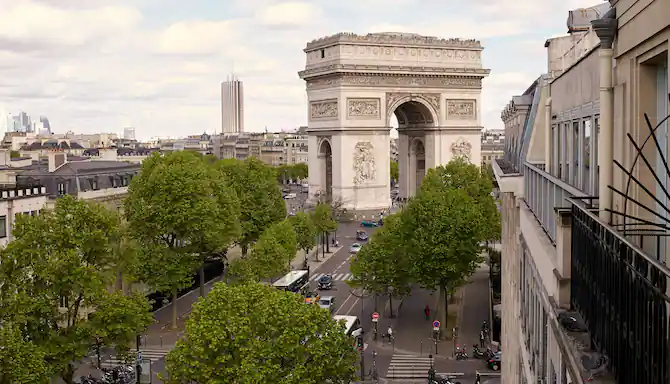
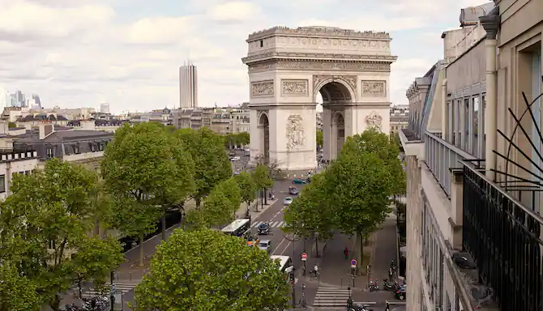
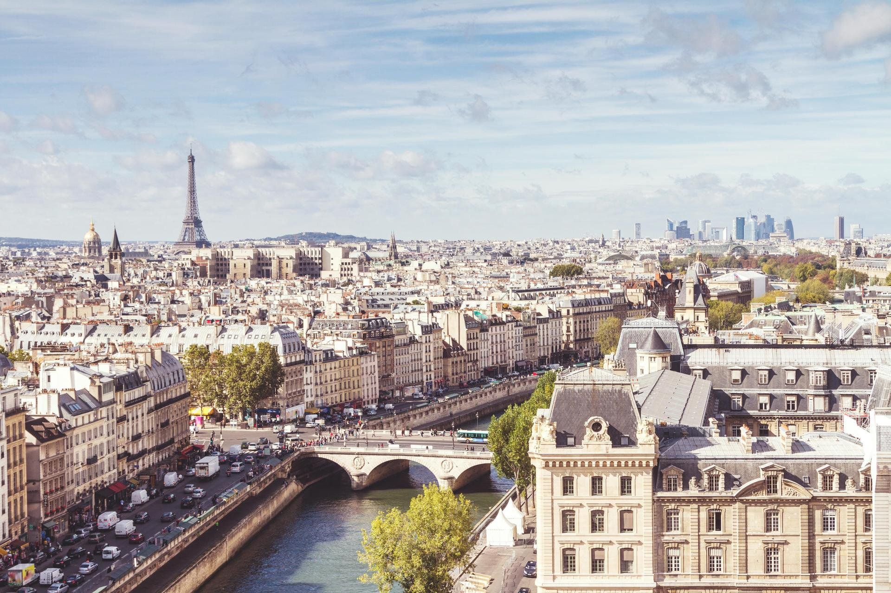
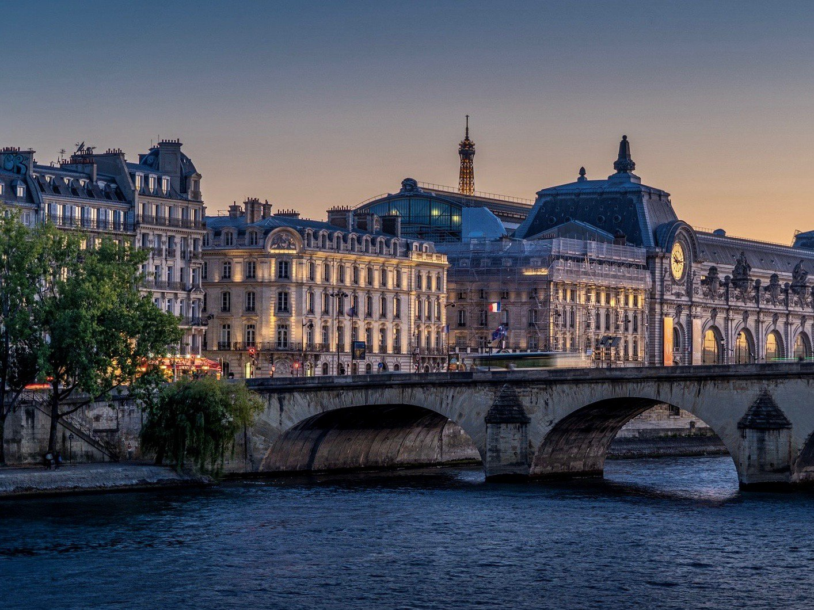

Paris, city and capital of France, situated in the north-central part of the country.
People were living on the site of the present-day city, located along the Seine River some
233 miles (375 km) upstream from the river's mouth on the English Channel (La Manche), by
about 7600 BCE. The modern city has spread from the island (the Île de la Cité) and far
beyond both banks of the Seine. Paris occupies a central position in the rich agricultural
region known as the Paris Basin, and it constitutes one of eight départements of the
Île-de-France administrative region. It is by far the country's most important centre of
commerce and culture. Area city, 41 square miles (105 square km); metropolitan area, 890
square miles (2,300 square km). Pop. (2012) city, 2,265,886; (2015 est.) urban
agglomeration, 10,858,000.
For centuries Paris has been one of the world's most
important and attractive cities. It is appreciated for the opportunities it offers
for business and commerce, for study, for culture, and for entertainment; its gastronomy,
haute couture, painting, literature, and intellectual community especially enjoy an enviable
reputation. Its sobriquet “the City of Light” (“la Ville Lumière”), earned during the
Enlightenment, remains appropriate, for Paris has retained its importance as a centre
for education and intellectual pursuits.

The three main parts of historical Paris are defined by the Seine.
At its centre is the Île de la Cité, which is the seat of religious and
temporal authority (the word cité connotes the nucleus of the ancient city).
The Seine's Left Bank (Rive Gauche) has traditionally been the seat of
intellectual life, and its Right Bank (Rive Droite) contains the heart of
the city's economic life, but the distinctions have become blurred in recent
decades. The fusion of all these functions at the centre of France and, later,
at the centre of an empire, resulted in a tremendously vital environment.
In this environment, however, the emotional and intellectual climate that
was created by contending powers often set the stage for great violence in
both the social and political arenas—the years 1358, 1382, 1588,
1648, 1789, 1830, 1848, and 1871 being notable for such events.
“CLICK HERE”